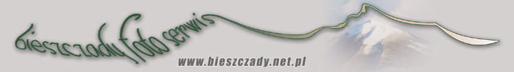

to napisz :

LINKI
Inne strony o Edwardzie Stachurze
STACHURIADA - Szeroki serwis, zawiera biografię, fotografie,
wybór
utworów (m.in.
rzadko spotykane, opublikowane w "Postscriptum"), akordy do piosenek i
pliki mp3 z nagraniami SDM, opinie o Stachurze, listę wydań xiążkowych
utworów Stachury.
Ciekawie opracowane dane: drzewo genealogiczne, biografia,
bibliografia, trzy prace analityczne, zdjęcia, skany rękopisów,
zdjęcia miejsc związanych z życiem Poety, refleksje...
http://stachura.kulturalna.com/
Wiele utworów, przekłady na angielski, zdjęciaSerwis w języku angielskim
http://www.egroups.com/list/stachuriada
stachuriada@egroups.com
Grupa dyskusyjna
A także:
Pacyfka - moja strona osobista
Poetycki przewodnik po Tatrach
www.tatry-w-poezji.xemantic.com
Beskid Niski fotogaleria by Adamopal
Bieszczady - nie tylko zdjęcia, ale i wszystko inne

Jeżeli
znalazłaś/eś tu jakieś błędy
lub wiesz, że można by coś dodać
to napisz :